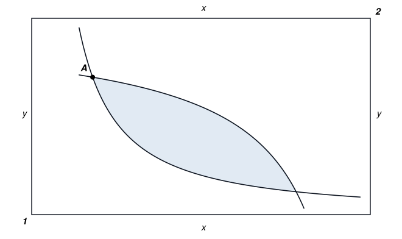
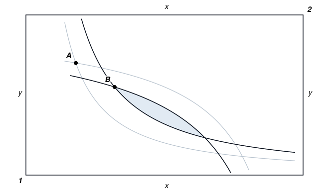
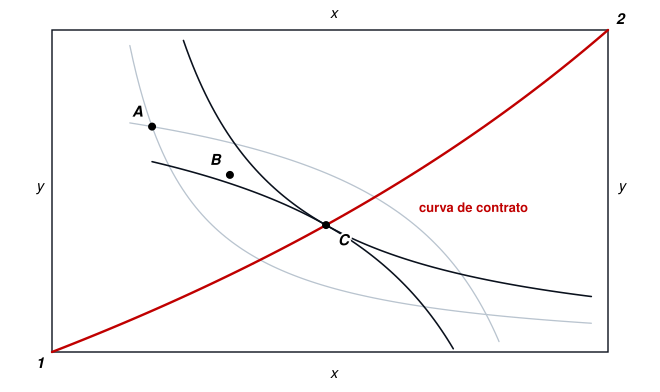
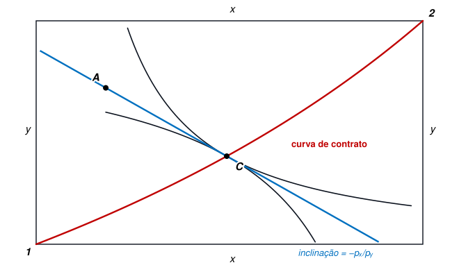
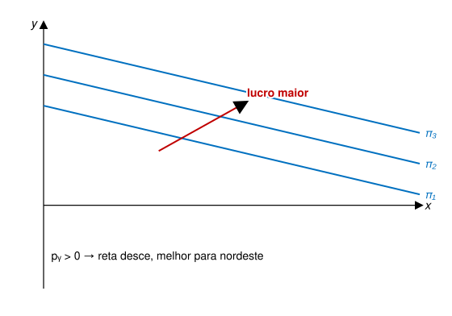
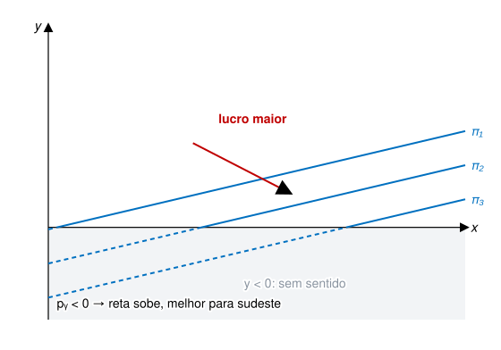
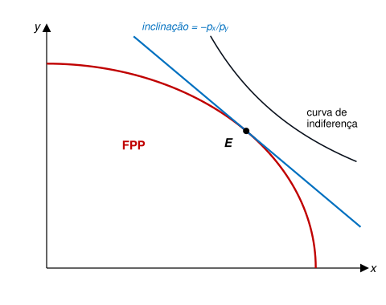

EAE1317 — Economia do Meio Ambiente e dos Recursos Naturais
2026-08-06
Considere duas fábricas despejando a mesma carga no rio.
O órgão ambiental exige um abatimento (redução) total da poluição de 100 toneladas.
Suponha que
Como você dividiria o abatimento entre as duas firmas?
As duas alternativas cortam as mesmas 100 toneladas.
A segunda é melhor? É a mais justa?
Referência: Kolstad, cap. 4.
Como atribuir valor ao Meio Ambiente?
Suponha que a a construção de uma represa vá extinguir uma espécie de planta. A princípio, ninguém a usa para nada: não é insumo para remédio, não é comestível e não atrai turistas.
Isso é um custo ambiental? Por quê?
As três respostas são válidas e atreladas a diferentes formas de dar valor aos bens ambientais, que discutiremos em seguida.
O arcabouço que construiremos a partir de agora tende a ser antropocêntrico e instrumental, pois mede valor pela disposição a pagar das pessoas.
É importante que esta limitação esteja transparente, pois nos informa sobre aquilo que ignoramos, mas que, mesmo assim, pode ser valorizado por alguns grupos.
Retomando o Conceito de Ótimo de Pareto
O critério é mudo sobre isso, o que constitui outra limitação a ser reconhecida.
1. Trocas TMS igual entre os indivíduos
2. Produção TMT igual entre as firmas
3. Mercado TMS \(=\) TMT no equilíbrio
Desenho na LOUSA.



\[TM{S}_{xy}^{1}=\frac{{p}_{x}}{{p}_{y}}=TM{S}_{xy}^{2}\]

1. Trocas TMS igual entre os indivíduos
2. Produção TMT igual entre as firmas
3. Mercado TMS \(=\) TMT no equilíbrio
\[\pi ={p}_{x}x+{p}_{y}y-C\]
sendo \(C\) um custo fixo.
\[y=\frac{\pi +C}{{p}_{y}}-\frac{{p}_{x}}{{p}_{y}}x\]


\[TMT=\frac{{p}_{x}}{{p}_{y}}\]
\[TM{T}_{j}=\frac{{p}_{x}}{{p}_{y}} \forall j\]
Considere três firmas na bacia do Tietê. O órgão ambiental exige um corte total de 90 toneladas de despejo industrial. Cada firma corta em blocos de 10 toneladas e cada corte custa mais que o anterior.
| Custo do bloco (R$ mil) | Firma A | Firma B | Firma C |
|---|---|---|---|
| 1º bloco (10 t) | 10 | 30 | 60 |
| 2º bloco (10 t) | 20 | 60 | 120 |
| 3º bloco (10 t) | 30 | 90 | 180 |
| 4º bloco (10 t) | 40 | 120 | 240 |
| 5º bloco (10 t) | 50 | 150 | 300 |
Em duplas (5 minutos): (i) Quanto custa exigir 30 t de cada firma? (ii) Qual é o corte de 90 t mais barato possível? (iii) Nesse corte, o que há de comum entre as três firmas?
| Corte uniforme (30 t cada) | Corte mais barato | |
|---|---|---|
| Firma A | 30 t — R$ 60 mil | 50 t — R$ 150 mil |
| Firma B | 30 t — R$ 180 mil | 30 t — R$ 180 mil |
| Firma C | 30 t — R$ 360 mil | 10 t — R$ 60 mil |
| Total (90 t) | R$ 600 mil | R$ 390 mil |
| Diferença | R$ 210 mil mais barato (35%) |
1. Trocas TMS igual entre os indivíduos
2. Produção TMT igual entre as firmas
3. Mercado TMS \(=\) TMT no equilíbrio
\[TMS=\frac{{p}_{x}}{{p}_{y}}=TMT\]

Desenho na LOUSA.
EAE1317 — Economia do Meio Ambiente e dos Recursos Naturais